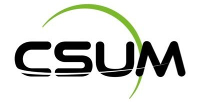

Français
Français
 Anglais
Anglais
 Japonais
Japonais
üöÄ 2028/... - Travailler dans le spatial
Mon objectif est de rejoindre une entreprise du secteur aérospatial pour contribuer au développement des technologies spatiales et des systèmes informatiques qui soutiennent les missions spatiales.
üéì 2026/2028 - Master en Informatique
Poursuite d'études en Master spécialisé en ingénierie des systèmes informatiques complexes, avec une orientation vers l'intelligence artificielle et les systèmes embarqués.
 üöÄ 2025 - Stage au CSUM
Stage au Centre Spatial Universitaire de Montpellier, travaillant sur des logiciels d'analyse de données pour les nanosatellites et les systèmes de communication spatiale.
üéì 2023/2026 - IUT informatique
Formation en informatique à l'IUT de Montpellier, avec une spécialisation en développement logiciel et gestion de projets. Acquisition des compétences fondamentales en programmation, bases de données, et méthodes agiles.
üéì 2020/2023 - Bacalaur√©at g√©n√©ral
Lycée Jean Jaurès, obtention du baccalauréat général avec spécialités Mathématiques et Informatique. Premier contact avec la programmation et développement d'un intérêt pour les sciences spatiales.